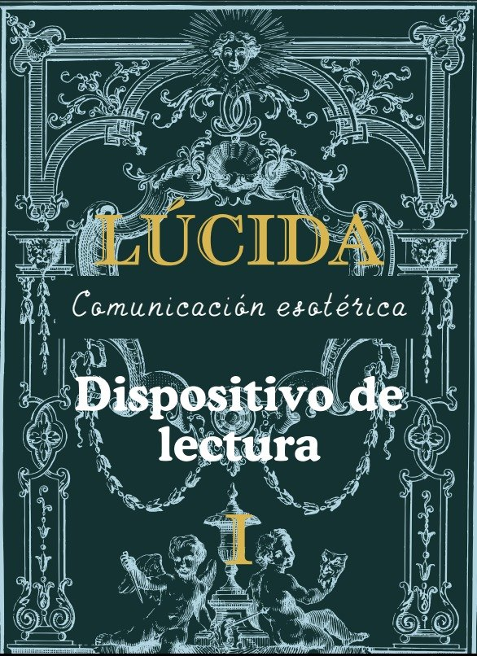
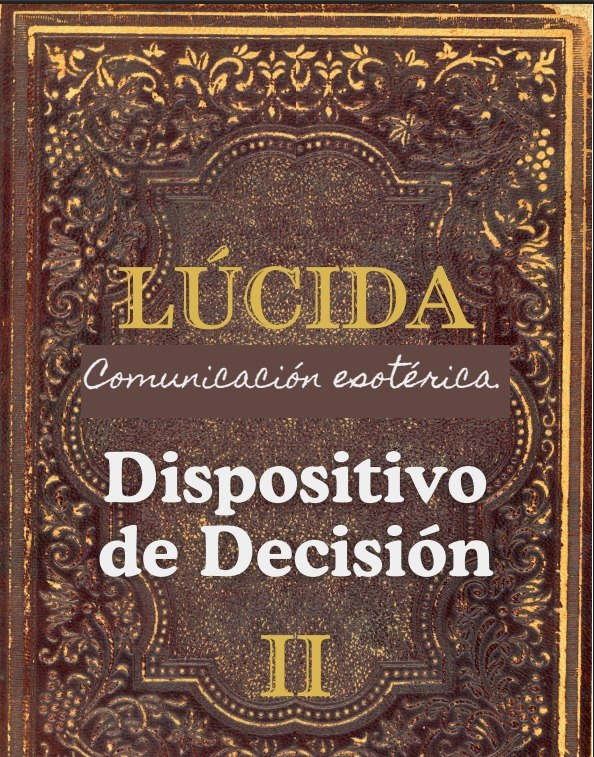
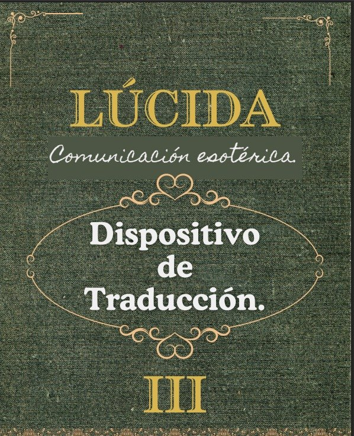

Dispositivo de Lectura
Aprender a leer lo que te pasa.
Comunicación Esotérica
Carta del día
Volvé mañana por tu próxima carta.
Y tres Dispositivos para reflexionar, volver al cuerpo y experimentar lo que necesite ser experimentado.
Son tres workbooks, también en formato de audio, que combinan reflexión escrita con ejercicios somáticos. No se leen para entender: se usan para sentir.
Cada uno es consecuencia del anterior. Se transitan en orden, y con cada paso el trabajo se vuelve más complejo para alcanzar estados de mayor profundidad.
Podés tener una sesión 1:1 conmigo, sólo contactándome a través del correo.
Escribime a soylucy@lucida.best
Aprender a leer lo que te pasa.

Elegir a partir de lo leído.

Llevar la decisión al cuerpo y a la vida.
Próximamente
El Scriptorium: un rincón para hacer pausas, con pomodoro, sonidos ambientales y más. Lo estamos preparando.